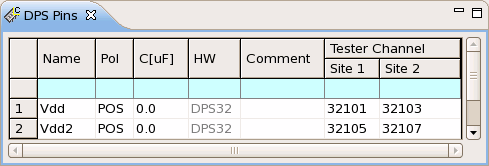
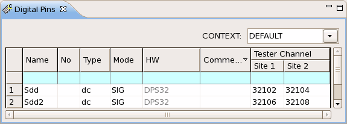

Configuring the pins for a dynamic DC test
In this example configuration, all pins are part of the default port (@). The example also defines two sites.
Procedure
Configure the power and signal pins as shown in the graphics below.
- To configure the power pins in DPS-mode, you use the DPS Pins editor.
- To configure the PMU-mode for the signal pin, you must use the Digital
Pins editor. Set the Type to dc and the Mode to
SIG.


Results
In the resulting pin configuration file, the DFPS (DeFine Power Supply) command configures the DPS-mode for the power pin, and the DFPN (DeFine Pin Name) command configures the PMU-mode for the signal pin. The CONF command is optional.
Configuring the pogo pin 32101 as POWER pin and naming it Vdd:
DFPS (32101),POS,(Vdd) CONF DC,POWER,(Vdd) -> Optional
Configuring the pogo pin 32102 as DCSIGNAL pin and naming it Sdd:
DFPN 32102,"",(Sdd) CONF DC,DCSIGNAL,(Sdd) -> Optional
Defining two sites:
PALS 2,32103,,(Vdd) PALS 2,32104,,(Sdd)
The following lines show the complete sequence of firmware commands in the resulting pin configuration file:
DFPS (32101),POS,(Vdd) DFPN 32102,"",(Sdd) DFPS (32105),POS,(Vdd2) DFPN 32106,"",(Sdd2) PALS 2,32103,,(Vdd) PALS 2,32104,,(Sdd) PALS 2,32107,,(Vdd2) PALS 2,32108,,(Sdd2) PSTE 2 CONF DC,POWER,(Vdd) CONF DC,DCSIGNAL,(Sdd) CONF DC,POWER,(Vdd2) CONF DC,DCSIGNAL,(Sdd2)
What to do next
Next you must define a level equation set for the dynamic DC test.
Functional changes
- Introduced in SmarTest 6.5.2
- SmarTest 7.1.3: Removed the parameter Ser.R[ohm] from Digital Pins editor.
- SmarTest 7.1.3: Changed the parameter Polarity to Pol in the DPS Pins editor.
- SmarTest 7.1.3: Changed the parameter Load Capacitor [uF]/V-Ramp [us] to C[uF] in the DPS Pins editor.
- SmarTest 7.1.3: Changed the parameter Instrument to HW in the DPS Pins editor.